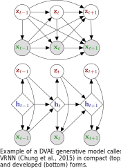

Simon Leglaive1 Xavier Alameda-Pineda2 Laurent Girin2,3
1CentraleSupélec, IETR, France 2Inria, Univ. Grenoble Alpes, CNRS, LJK, France 3Univ. Grenoble Alpes, CNRS, Grenoble-INP, GIPSA-lab, France
Tutorial at the 2021 IEEE International Conference on Acoustics Speech and Signal Processing (ICASSP)
Abstract | Tutorial | Paper | Code
Abstract| Dynamical variational autoencoders (DVAEs) combine standard variational autoencoders (VAEs) with a temporal model, in order to achieve unsupervised representation learning for sequential data. The temporal model is typically coming from the combination of traditional state-space models (SSMs) with feed-forward neural networks, or from the use of recurrent neural networks (RNNs). DVAEs can be used to process sequential data at large, leveraging the efficient training methodology of standard variational autoencoders (VAEs). The objective of this tutorial is to provide a comprehensive analysis of the DVAE-based methods that were proposed in the literature to model the dynamics between latent and observed sequential data. We will discuss the limitations of well known models (VAEs, RNNs, SSMs), the challenges of extending linear dynamical models to deep dynamical ones, and the various models that have been proposed in the machine learning and signal processing literature. Importantly we will show that we can encompass these models in a general unifying framework, from which each of the above-mentioned models can be seen as a particular instance. We will also demonstrate the use of DVAEs on real-world data, in particular for generative modeling of speech signals. |  |
You can access the slides of the tutorial here.
This tutorial was built from an early version of the following review paper, which is now published in Foundations and Trends in Machine Learning:
Dynamical variational autoencoders: A comprehensive review
Laurent Girin, Simon Leglaive, Xiaoyu Bie, Julien Diard, Thomas Hueber, Xavier Alameda-Pineda
Foundations and Trends in Machine Learning, vol. 15, no. 1-2, 2021
You will find this early version on arXiv. For the moment, the revised and final version of the paper is only available on the publisher's web page.
In this paper we perform an extensive literature review of extensions of the VAE to process sequential data. We also introduce and discuss a general class of models called Dynamical VAEs (DVAEs) that encompasses a large subset of these temporal VAE extensions. Then we present in detail seven different instances of the DVAE (see the table below) that were recently proposed in the literature, with an effort to homogenize the notations and presentation lines, as well as to relate these models with existing classical temporal models. We reimplemented those seven DVAE models and we present the results of an experimental benchmark conducted on a speech analysis-resynthesis task (the PyTorch code is made publicly available).
| STORN | J. Bayer and C. Osendorfer, Learning Stochastic Recurrent Networks, arXiv:1411.7610, 2014 |
|---|---|
| VRNN | J. Chung et al., A recurrent latent variable model for sequential data, NeurIPS 2015 |
| SRNN | M. Fraccaro et al., Sequential neural models with stochastic layers, NeurIPS 2016 |
| DMM | R. Krishnan et al., Structured inference networks for nonlinear state space models, AAAI 2017 |
| KVAE | M. Fraccaro et al., A disentangled recognition and nonlinear dynamics model for unsupervised learning, NeurIPS, 2017 |
| DSAE | Y. Li and S Mandt, Disentangled sequential autoencoder, ICML 2018 |
| RVAE | S. Leglaive et al., A recurrent variational autoencoder for speech enhancement, IEEE ICASSP 2020 |
We provide in this Github repository a PyTorch implementation of above-listed DVAE models, along with training/testing recipes for analysis-resynthesis of speech signals using the Wall Street Journal dataset.
You can test already trained DVAE models on analysis-resynthesis of speech signals using this Google Colab notebook.